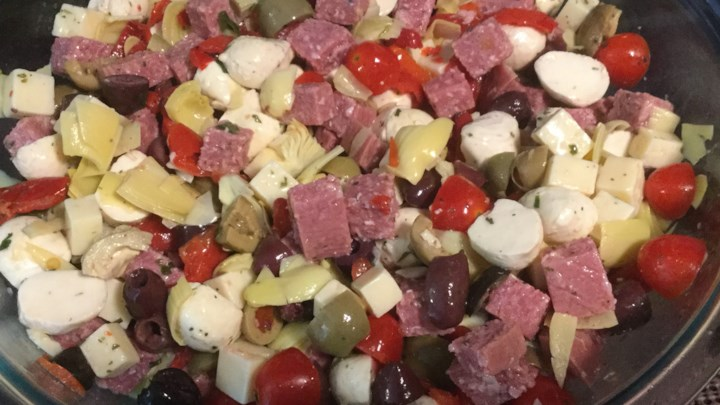

Salads
Italian Bread Salad with Strawberries and Tomatoes ($6.50)

Cubes of homemade Italian bread, fresh sliced Strawberries, diced red onions and Roma tomatoes sprinkled with Feta Cheese.
Spicy Italian Salad ($6.00)

Antipasto Salad ($6.50)
Genoa Salami and Sopressata Salami is mixed with provolone cheese, mozzarella cheese, tomatoes, artichokes, roasted red peppers, chopped Kalamata Olives, chopped green olives. Basil and Olive Oil are topped to finish it off.
Italian Leafy Green Salad ($6.00)

Romaine Lettuce, Escarole and Red Leaf Lettuce are all mixed with chopped green onions, roasted red and green bell peppers, Cherry Tomatoes and fresh Basil. Grapeseed Oil and Balsamic Vinegar top it off as the dressing.
Italian Confetti Pasta Salad ($7.00)

Rotini Pasta Noodles are paired up with fresh Basil, chopped tomatoes, yellow bell peppers and sliced black olives. Our homemade Italian dressing is mixed in to finish it off.
Return to top of page.